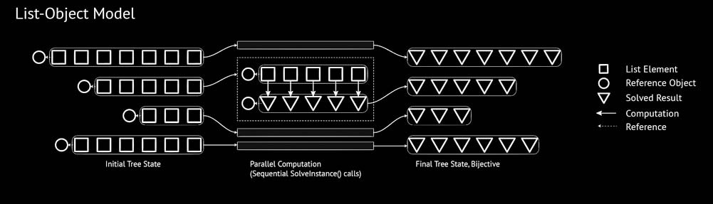
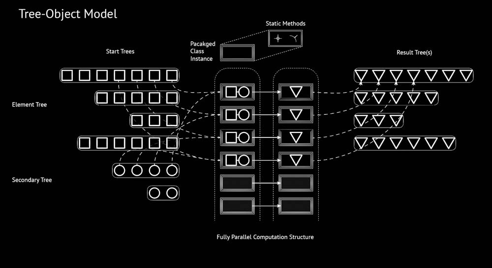
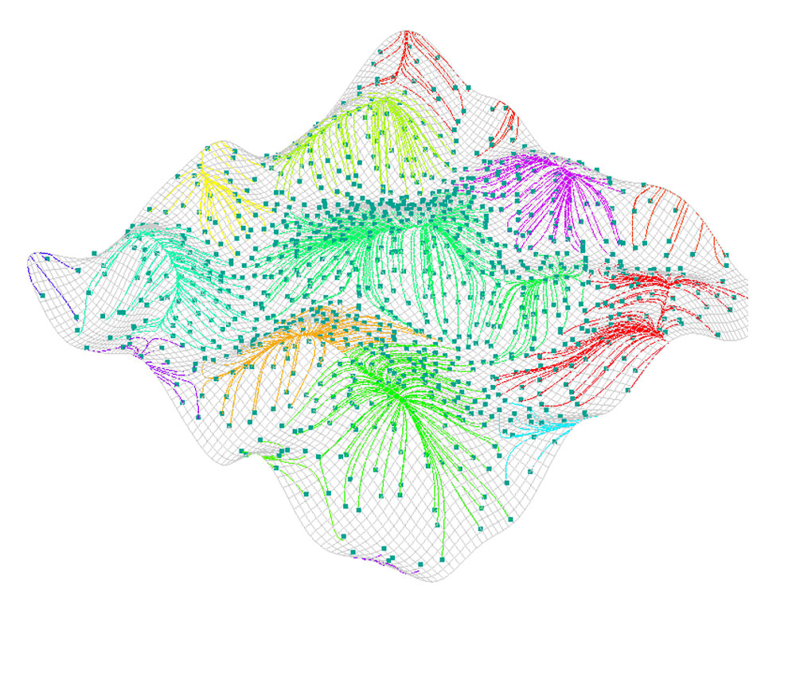

Introducing Impala - a multithreaded C# component library for Grasshopper. Impala replicates common bottleneck operations with a focus on efficiency, allowing complex scripts and simulations to make use of all available computational capacity. This is primarily beneficial for scripts that deal with thousands of objects or rely on physical operations or information.
Impala focuses primarily on replicating existing Grasshopper functionality and developing an environment suitable to seamless integration of multithreaded computation within Grasshopper. To this end it currently contains two types of components:
Closest Point, Halton)Closest Curve Closest Point, MeshFlow)Impala intends to provide as seamless an experience as possible, and does so by using nullable types and internally maintaining the structure of input data in the same way that Grasshopper does. It additionally aims to improve performance by exposing “threshold” parameters wherever possible - allowing the user to specify under which conditions they do not want the result of an operation, signifcantly speeding up the computation in these cases.
However, despite these advances, Impala’s parallelism is not (yet!) fully implicit. The by-item looping behaviour of most GH components is not suited to parallel operations, since the solve-instance method does not have access to all the necessary data simultaneously.
Several components aim to take advantage of Grasshopper’s implicit data looping, and thus contain specifcations to input certain data “as list” and “as item” in order to advantage certain types of parallelism. These are made explicit in the component inputs to mitigate unexpected behaviour.
[-] List Object Model - Implicit Loops

For example, it is common that CurveCP will operate on a list of points relative to a single curve, for example when extracting parameters for a sorting operation. Therefore the Impala analogue (parCurveCP) currently operates on a list-to-item basis to execute each CurveCP operation independently, without accessing the entire tree structure. This model is lean - it uses no additional information and maintains a simplicity in its internal stucture. However, it sufers from performance reduction when applied to a tree of inputs where each point interacts with a separate curve. Additionally, it is limited to “one-to-one” operations - where one input results in one (and only one) output.
[-] Tree Object Model - Explicit

Other components, however, illustrate a different model to structure the operation. Instead of specifying list vs. item operations, the Divide Length component, parDivLen, intakes the entire input tree simultaneously. It then packages the necessary structural information for each instance of the computation into a custom class instance. A single array of these is then operated on in parallel, optimising the bulk of the computational expense. The data is then extracted from the class and (thread-safely) inserted into the main data structure, which is agnostic to the order in which operations occur or the structure of the incoming or outgoing data. While (just) slightly slower, the Tree-Object model offers a “general case” solution to the problem. In the case of parDivLen, it allows data trees of any shape to be restructured and mapped to a new shape while still maximizing opportunity for parallel operations.
In the future, Impala will implement all operations to utilise the Tree-Object model, and potentially expose particular optional parameters which will allow the user to tune how the packaging works in order to optimise their particular use-case. It is the primary goal of Impala to extend Grasshopper’s capabilities (by allowing a wider range of expensive operations) while maintaining the prototyping flexibility that GH’s associative model and robust ecosystem lends to designers in the early stages.
While Impala has been tested and performs as expected on standard inputs, parallelism makes it more difficult to react when things go wrong, and the component may not always react safely to invalid inputs. The more egregious cases (wrong data types) are guarded against, but null-inputs may cause hidden problems to arise in unexpected out-puts, whereas Grasshopper would simply be able to output a null object. A set of test files provide examples (and guarantees of correctness) for all Impala components, as well as a short set of analysis notes for each of them specifying particularly helpful use-cases. These, along with the source code, are available on Github.
Additional goals for future development include:
[-] Mesh Flow Simulation

© Dan Cascaval, All rights reserved.